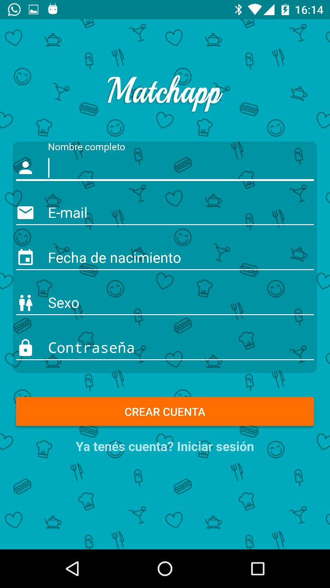
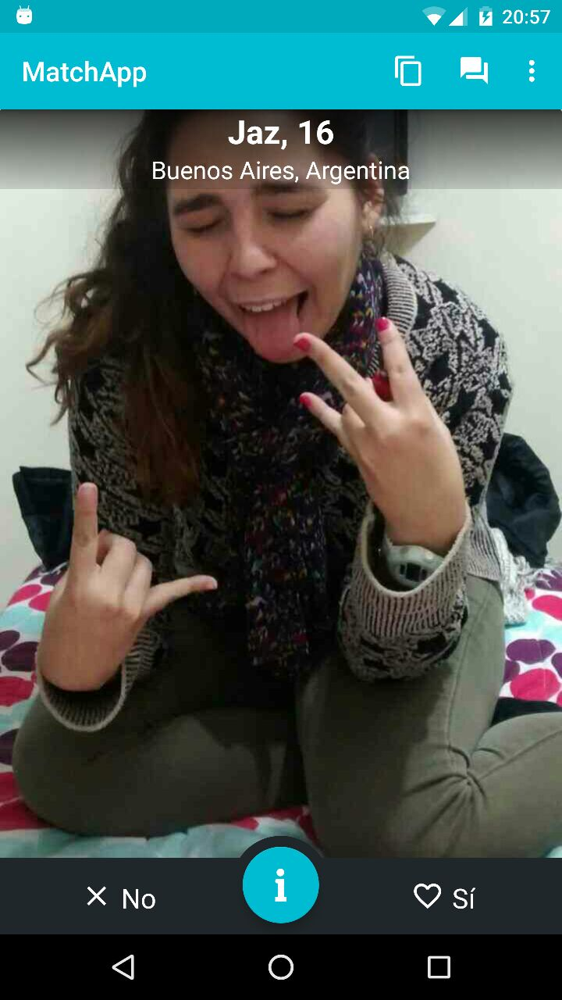

Manual de usuario¶
Para utilizar la aplicacion, principalmente hay que descargarla y abrirla.
Home¶
Al abrir la aplicacion por primera vez se puede ver esta pantalla

Para iniciar sesion se debe llenar el campo Mail y Contraseña, pero para llenar esto, se debe primero crear un usuario. Tambien se puede iniciar sesion con facebook con lo que no haria falta crear un usuario.
Crear Usuario¶
Al apretar crear una cuenta, se ve este esta pantalla
{kind=link}
Para crear la cuenta, se debe llenar el nombre, mail, fecha de nacimiento y contraseña. Finalmente, apretar Crear Cuenta y se creara la cuenta. Luego apareceran pantallas como la siguiente donde se seleccionaran los intereses del nuevo usuario

Finalmente aparecera una pantalla para ingresar la foto de perfil y con esto finalizara la creacion de la cuenta.
Iniciar Sesion¶
Una vez que se dispone de una cuenta, se ingresan los datos y luego apretar Iniciar Sesion. Luego se ira a la pantalla de seleccion de candidatos. Apareceran candidatos posibles de los cuales el usuario puede seleccionar o rechazar a quien quiera. Se acepta con el boton Si o desplazanto la imagen hacia la derecha, y se rechaza apretando No o desplazando la imagen hacia la izquierda. Las pantallas serian las siguientes
{kind=link}
{kind=link}
En el caso de no tener mas candidatos disponibles, el sistema buscara nuevos

Match¶
En caso de que el interes sea reciproco, aparecera una pantalla avisando que hay un match y se habilitara un chat como el siguiente

{kind=link}